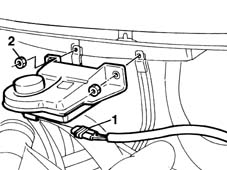
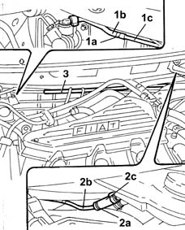

3330C37 pipe from brake fluid reservoir to master cylinder (pump) - r r for rhd versions
- Path
- Procedures > 33 BRAKING SYSTEM > 3330 HYDRAULIC BRAKING SYSTEM > 3330C brake pump, reservoir and load proportioning valve > 3330C37 pipe from brake fluid reservoir to master cylinder (pump) - r r for rhd versions
- Kind
- repair procedure (removal / refitting; the operation number is the code)
- Applies to
- all engines; all production periods
- Interactive page
- https://sloeber94.github.io/elrnDB-fMltpl/en/#/2891622
Applies to: all engines; all production periods; only with equipment: Right hand drive
 Removing
Removing
 Refitting
RefittingDisconnect the battery negative terminal.
Position a container underneath the vehicle.
Drain the brake/clutch fluid reservoir using a syringe.
Applies to: engines: 1.9 JTD 8V; all production periods; only with equipment: Right hand drive
1016A10 sound-proofing cover - r + r
1. Disconnect the electrical connection for the brake fluid level sensor.
 | Name | Connector |
|---|---|---|
1 | Brake fluid level sensor (switch) | K25 |
2. Undo the nuts fixing the brake fluid reservoir and move it aside.

Applies to: all engines; all production periods; only with equipment: Right hand drive
1. Open the master cylinder side band (1a) and disconnect the rigid pipe (1b) from the flexible one (1c).
2. Remove the reservoir side band (2a) and disconnect the rigid pipe (2b) from the flexible one (2c).
3. Release the rigid pipe from the fastenings and remove it

Applies to: all engines; all production periods; only with equipment: Right hand drive
Refitting
RemovingSecure the rigid pipe to the fastenings.
Secure the reservoir side flexible pipe to the rigid pipe using a band.
Secure the master cylinder side flexible pipe to the rigid pipe using a band.
Applies to: engines: 1.9 JTD 8V; all production periods; only with equipment: Right hand drive
Connect the electrical connection for the brake fluid level sensor.
Tighten the nuts fixing the brake fluid reservoir to the recommended torque.
 | Fastening | Component | Ø | Value (daNm) |
|---|---|---|---|---|
- | Nut | BRAKE FLUID RESERVOIR | M6 | 0.6 |
Applies to: all engines; all production periods; only with equipment: Right hand drive
3330A14 HYDRAULIC BRAKING SYSTEM - Bleed air
Connect the battery negative terminal.